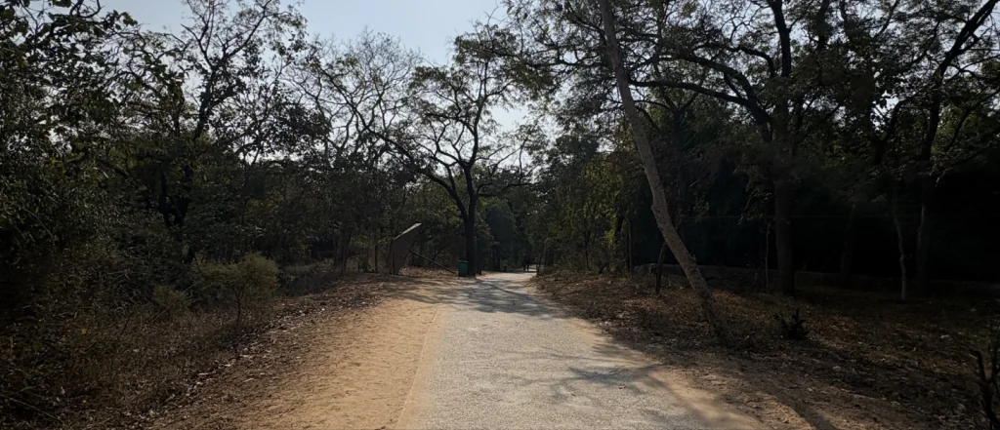
Route 02 · 9 stops
Case study · UX research
Indroda Nature Park
At a junction, the park asks you to choose without telling you between what.
- Problem
- First-time visitors can’t tell where routes lead at the moments they have to choose: at junctions and at the entry.
- My role
- Solo researcher. I planned the study, did the fieldwork and wrote the synthesis. M.Des research module, 20 Jan – 3 Feb 2026.
- Key insight
- Navigation failure is a system issue, not a user issue.
- What I did
- Secondary research, observation, contextual inquiry, conversations with visitors and photo documentation; an empathy map, six insights, a problem definition and five directions.
- Status
- Research and framing. Directions not yet designed in full or tested with visitors.
From my field log
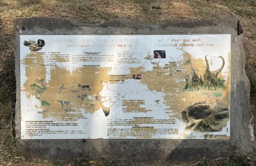
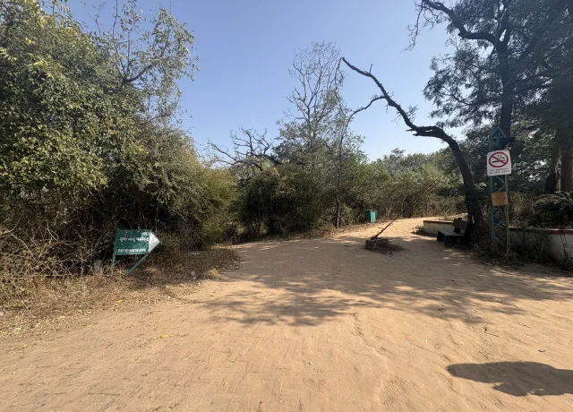
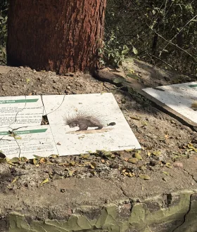
Stop 01 of 09
The fork I missed
Indroda is a large park with no obvious flow between its zones, and many visitors come for the first time. On my first visit I finished the whole park and didn’t know the aviary was there.
What I found on the ground
The board at this fork was turned, showed one arrow, and named the deer area in English. The Gujarati line also named the small aviary, so it was on the sign, but half-hidden by shrubs.
I read the English line. A side path with no board led up a flight of stairs to the aviary. On day one I took the straight path. On day two I took the side path.
“I read the English line. In English, nothing told me it existed.”
What this is
The problem I investigated, not an answer I had before the research. I didn’t yet know how many visitors this affected, or why.
Stop 02 of 09
Three visits, three questions
I started with online reviews, then observed and spoke to visitors on site. Sessions covered mornings and afternoons, 2–3 hours each, as recorded in my daily logs.
23 Jan
Visit 1
Observation, 2–3 hours. Passive at first, then short conversations. The most confusing and tiring visit. I missed the aviary.
24 Jan
Visit 2
I took a different route, the side path with stairs, and found the aviary.
29 Jan
Visit 3
A later visit with some familiarity. Fewer missed sections and less unnecessary walking.
Secondary researchEthnographic observationContextual inquiryConversations with visitorsPhoto and video documentation
Stop 03 of 09
On the ground
Five themes from three visits. The photographs are mine; captions follow my evidence log.
Theme A
Junctions without clear directional information
Where routes diverge, boards were few, small or to one side.
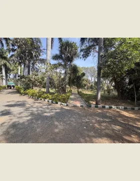
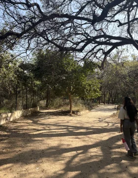
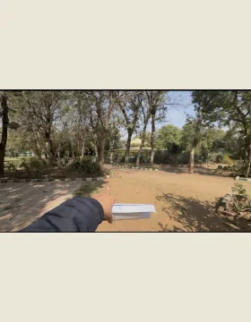
Theme B
Damaged or hard-to-read boards
Information boards faded, stained, torn or lying on the ground.
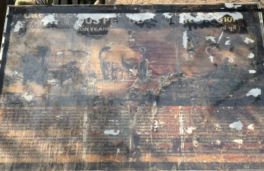
Theme C
Visitors stopping and hesitating
Seen in person and in field notes, not captured in photographs.
From my field notes
Groups stopped at junctions to discuss which way to go. Parents and elderly visitors often hesitated at intersections. Some asked other visitors or staff, even after reading a board.
Theme D
Long walks and limited resting places
Seating was better near the entrance and thin in the later sections.
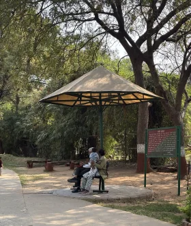
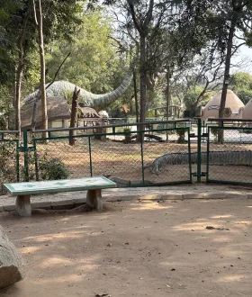
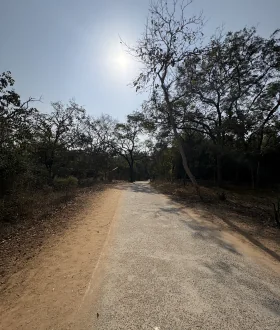
Theme E
Empty sections and missed attractions
Exhibits with nothing in them. The aviary, missed on visit 1, is in stop 01.
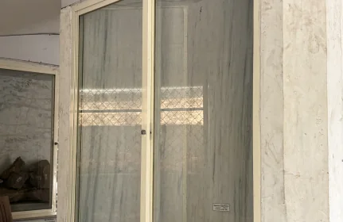
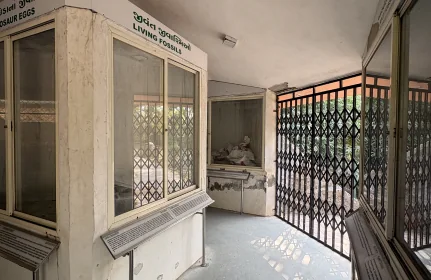
Stop 04 of 09
What I observed
From photographs to behaviour: six things I saw repeatedly, and why each mattered.
Visitors paused at junctions
Groups stopped, looked around and talked through the route before moving on.
Decisions happen at junctions, and the junctions gave little to decide with.
They asked each other
Incoming visitors asked people leaving about attractions such as the aquarium or a skeleton exhibit.
Information was moving by word of mouth, not through the signs.
They wanted a person to confirm
Even after reading a board, several visitors asked someone to check.
A board that people double-check is not doing its job.
Families and elderly visitors rested wherever they could
People sat on rocks, paths and roadsides. Parents carried tired children.
Unclear routes add walking, and walking costs these groups most.
Some visitors left early or missed things
Some returned to the entrance within an hour without finishing. I missed the aviary on visit 1.
A visit loses value when you can’t see what you’re missing.
First visits were harder than later ones
My first visit was the most confusing; later visits had fewer missed sections.
The difficulty came from not knowing the park, which a good system should cover.
One incident, noted as such
A foreign visitor, after sorting out a ticket issue, missed the entry point because of where the entry board was placed, walked the wrong way and later came back to find the gate. One person, but it showed me the entry board was not doing its job either.
Stop 05 of 09
Visitor perspective
An empathy map built from what I heard, saw and inferred. I mapped the groups I met most: first-time visitors, families with children, school groups and elderly visitors. I did not build a persona; the evidence covers groups, not one person.
Heardparaphrased from conversationsObservedseen on siteInferredmy readingSynthesiseddrawn across evidence
Say Heard
- Where is the way?
- This is tiring.
- The drinking water facility is unhygienic and dirty.
- I wish there were more shops, at least for drinking water bottles.
Do Observed
- Look around repeatedly for help or direction
- Ask other visitors or staff for guidance
- Skip the drinking water facility
- Take frequent breaks
- Keep walking despite confusion, or leave early
Think Inferred
- Are we going the right way?
- Did we miss something?
- There is too much walking.
- There should be better navigation.
- I don’t feel safe using this water facility.
Feel Inferred
- Confused
- Frustrated
- Tired and exhausted
- Thirsty and unhappy
- Slightly stressed by the lack of clarity
Pain Synthesised
- No clear wayfinding
- Long walks without clarity
- Fatigue, especially for families and elderly visitors
- Unhygienic drinking water
- No bottles or refreshments inside
Gain Synthesised
- A green, natural setting
- Animals and birds up close
- Time with family
- Learning about wildlife
- A sense of exploration
Say items are paraphrased from short, informal conversations, so I have not set them as quotations.
Stop 06 of 09
Six insights
What each finding asks of a design. The first is the one the whole study turns on.
Insight 01
Navigation failure is a system issue, not a user issue.
Supporting observations
The same park felt easier on later visits. Boards existed at some junctions, yet people still needed someone to confirm the way.
Design implication
Put the information in the place. Do not ask visitors to learn the park first.
Insight 02
Decision points lack sufficient guidance.
Supporting observations
At junctions with several routes, I saw boards that were absent, turned away or showed one route.
Design implication
Give each fork its own information about every route from it.
Insight 03
Poor wayfinding contributes to physical fatigue.
Supporting observations
Unclear routes led to extra walking. Parents carried children; elderly visitors slowed and stopped.
Design implication
Show distance or time so visitors can judge the effort.
Insight 04
Visitors do not fully trust existing information.
Supporting observations
People asked for confirmation after reading boards. Many boards were damaged or hard to read.
Design implication
Add reassurance, and keep boards readable and consistent.
Insight 05
Missed attractions reduce the value of a visit.
Supporting observations
I missed the aviary on visit 1. It was named only in the Gujarati line, half-hidden.
Design implication
Preview what lies along each route, not only where it leads.
Insight 06
Problems at the entry shape the rest of the visit.
Supporting observations
The entry board was badly placed. A visitor walked the wrong way. Seating at the start was thin.
Design implication
Orient people at the entry, with an overview of the park.
Stop 07 of 09
Problem definition
What the research asks a design to solve.
How might we
help first-time visitors navigate Indroda Nature Park with greater confidence, discover its attractions, and manage their visit without unnecessary walking or confusion?
Who is most affected
First-time visitors, who have no map in their head. Families with children and elderly visitors, for whom extra walking costs more. School groups, who depend on a teacher to find the way. Foreign visitors, as the entry incident showed (one case).
The main problem
Visitors cannot tell where routes lead at the moments they have to choose. Wayfinding and orientation, at junctions and at the entry.
Supporting issues
Damaged boards, thin seating, an unhygienic water point and litter. They make the visit worse, but they are not the wayfinding problem and I kept them apart.
Stop 08 of 09
Five directions
Each proposal is tied to a finding.
Proposed · not designed in full or tested with visitors
Orientation at the entry
Move the entry board to where visitors decide, and add one overview map of the park and its attractions.
The entry board was badly placed and a visitor walked the wrong way. First-timers did not know the park’s scale.
Complete junction boards
A board at every junction with several routes, covering all of them and saying what lies along each.
Junctions had no board, a turned board or one arrow. I missed the aviary.
Distance and time on boards
Approximate walking time on each route, so visitors can plan their energy.
Unclear routes added walking; families and elderly visitors tired early.
Reassurance along the path
“You are on the right path” and “Next attraction ahead” confirmations.
Visitors asked for confirmation even after reading boards.
Legible, consistent signs
High contrast, large type and universal symbols, with direction signs, maps and information boards clearly different.
Many boards were faded or on the ground, none said what kind of help they were, and the aviary was named in the Gujarati line only.
Stop 09 of 09
What I learned, and what comes next
I assumed people would explore on their own.
Without cues, exploring was stressful rather than enjoyable. I had treated discovery as something a nature park gives for free.
A sign that exists is not a sign that works.
I expected signboards to be enough. Placement, inconsistency and the lack of a hierarchy made them ineffective for first-time visitors.
Asking a stranger is a sensible response.
I first read the habit of asking others as dependence. Then I saw people ask even after reading a board. The boards had not earned their trust.
My first visit was part of the data.
I missed the aviary once and found it the next day. Nothing about me changed, only what I knew. That is what made me read the problem as the system’s.
Limitations
- Three visits, so weekends, holidays and peak seasons are not covered.
- Conversations with visitors were informal and short, which limits depth.
- I mostly observed families, first-time visitors and school groups. Other visitors may be under-represented.
- Weather, heat and time of day may have affected behaviour and fatigue.
- The study focused on navigation. Other parts of the visit were not explored equally.
Proposed next steps · none done yet
- Develop wayfinding concepts for the entry and major junctions.
- Evaluate route-preview information.
- Test signage hierarchy and readability.
- Assess where signs sit at decision points.
- Validate proposals with first-time visitors.
- Evaluate accessibility across visitor groups.
Closing
Wayfinding is not only about getting people from one place to another. It is how they feel able to explore, find what the park holds, and stay for it.
All photographs are from my own field documentation. The findings come from one small study and have not been measured at scale.
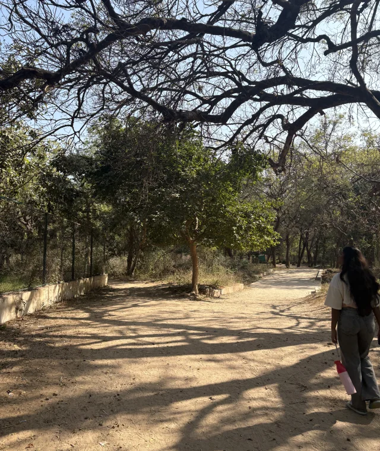